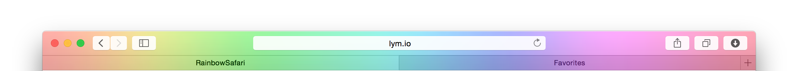

Blank & Colored Safari Toolbars.
Only visible in Safari 8 on Yosemite and iOS8
If you are using the new Safari on OSX Yosemite, you might have noticed by now.
The big blue header is not visible behind the blurred "menu bar" in safari.
Instead, you see a nice rainbow.
You can use this to hide things (as explained below), but also to brand Safari to your own brand colours, use the menu bar as a status indicator or loading bar, use it to get your users attention, use it to look totally hipster with a custom menu bar, or use it just because you like it.
With a little more javascript, a lot more should be possible.
I was annoyed by "hidden menus" not being fully hidden on Safari 8. If you look at for example a medium.com article, and scroll down, the menu at the top of the page moves up (disappears) and shows again when you scroll down. But in Safari 8, it does not fully disappear, as its still visible behind the blurred background.
The idea to solve this was to add an overlay top of the page, with the same color as the website background color, to hide everything that was supposed to scroll behind it. But then I came up with an even better idea. The background of the overlay could be any color. Yes, any. That's when RainbowSafari was created.
For non-Safari users:
The difference between blank and none might be hard to spot at first, but if you scroll up, you will notice.
Below is all the code you need to change the color of the Safari menu. Just add this HTML and CSS to your website. You do not have to use a single background color. Images (even animated) and gradients are also supported.
Credits to Markus Oberlehner for the CSS only version and Liam Forsyth for making images and gradients work in this CSS only version.
<div id="rainbowsafari"></div>
#rainbowsafari {
background-color: #FFFFFF; /* Edit This */
right: 0;
top: 0;
height: 100px;
z-index: 99999999999;
position: fixed;
content: "";
display: block;
-webkit-transform: translateY(-99.99px);
}